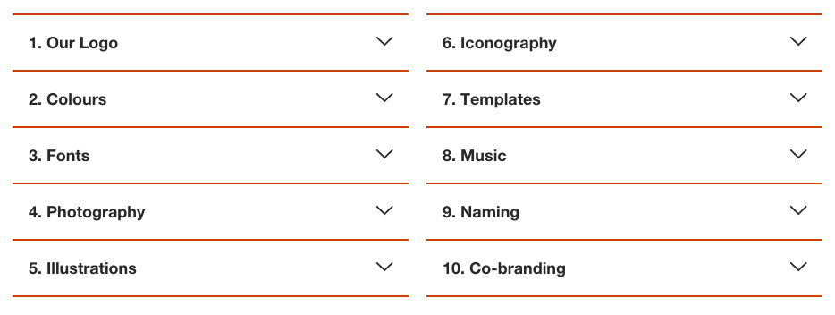
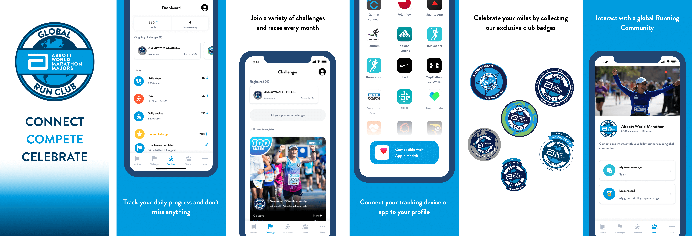

Virtual Clubs
One of my main tasks within Sport Heroes has been to work with clients who wanted to have an application with a higher degree of customisation, i.e. an application different from the default Sport Heroes services.
This option allows companies to customise the application with a different logo, a different name, colours and visual identity determined by them and a series of other customisable elements.
- Roles: UI Design, UX experience, Web design
- Tools: Figma, Webflow
- Year: 2021-2022
- Context: Workplace

Customer and client understanding
Before starting with the design tasks, my role as a designer is also to understand what the client wants and what they are looking for. This does not mean that the client gives me guidelines and I follow them, but my task as a designer is to understand the client and translate their needs into design solutions.
In the different Virtual Clubs projects I have worked on, around 10, I have had clients who were very clear about the final result they wanted to achieve and who provided me with all the necessary elements, and others who, however, were not clear about what they wanted and needed support to explore the different possibilities.
In any case, and although it was a team work in which there was a person responsible for talking to the client, I believe that we designers must make an effort to communicate well with the client or help those people who do so in this type of projects.
Design process
Client assets
Before starting to design anything, the first task is to review all the elements that the client has provided us with. As a general rule, we usually ask for the style/branding guide and the different elements we need, i.e. typography to be used, images, illustrations, etc.

As this is a job in which we have certain ''limitations'', i.e. within the app we use a limited number of colours, 2 different weights of typography, etc., we do not need an exhaustive knowledge of the brand elements, but some knowledge of them and the rules of use is required.
Something that I also use to do and I think it is very necessary is to review the presence of the brand on the internet, that is, its website, its social networks, etc., this allows me to better understand the brand and how it communicates with its customers visually. This process is of great help to me during the subsequent prototyping process, especially if I need to design some visual elements for the client.
Once I have compiled all the elements I need, I review and study them and group them in one place to start the next stage of the design process.
Prototyping
Once the previous stage is finished, I start with the prototyping process, which will result in an interactive prototype that the client can try out to get an idea of what the final result will look like.
The prototype is customised with the client's colours and typography and other graphic elements can be added.
The prototype will also serve as a reference for the programmers when developing the new app.
It is a process in which there is constant communication with the client to modify things and make the changes they consider appropriate. There is also teamwork during this process, as both project managers and programmers can participate.

Other elements
The design process is not only about getting a working prototype, but also about designing a whole series of elements that are part of a new application, i.e. icons, visual elements for the Play Store and Apple Store, etc.

 Also, although not directly related to the development of the app, a landing page was created to promote the app. I was also in charge of this task. The landing pages were made using Webflow and usually had a similar look and feel, although I adjusted to the client's needs.
Also, although not directly related to the development of the app, a landing page was created to promote the app. I was also in charge of this task. The landing pages were made using Webflow and usually had a similar look and feel, although I adjusted to the client's needs.

Learnings
Working with Virtual Clubs is a very enriching experience thanks to the variety of tasks to be performed, as well as the communication that has to be carried out with the clients.
My main objective was to satisfy the client and to be able to offer them design solutions adapted to their needs.
Working with the programmers is also very enriching thanks to the exchanges that take place during the development of the application. They are also very useful when it comes to receiving feedback from them.
Finally, it is a job where deadlines are very important and must be met, so it is a very good apprenticeship if we talk about the ability to adapt to them and meet them.